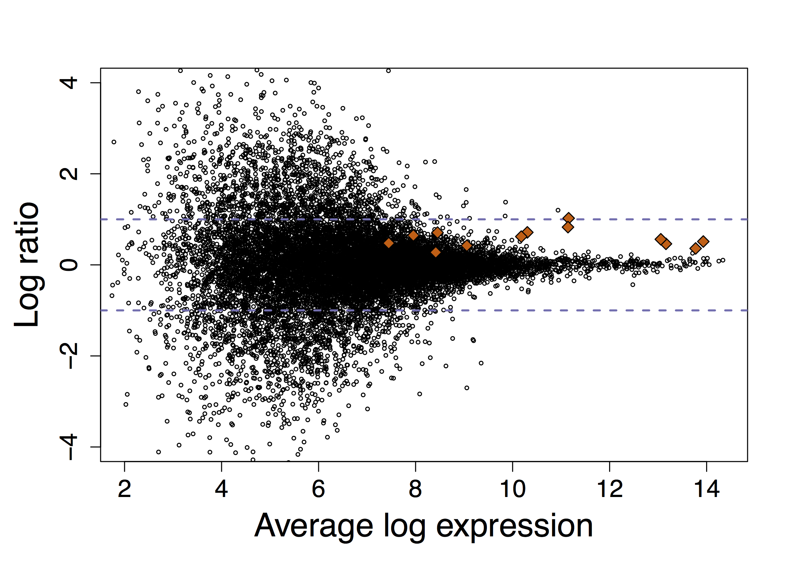
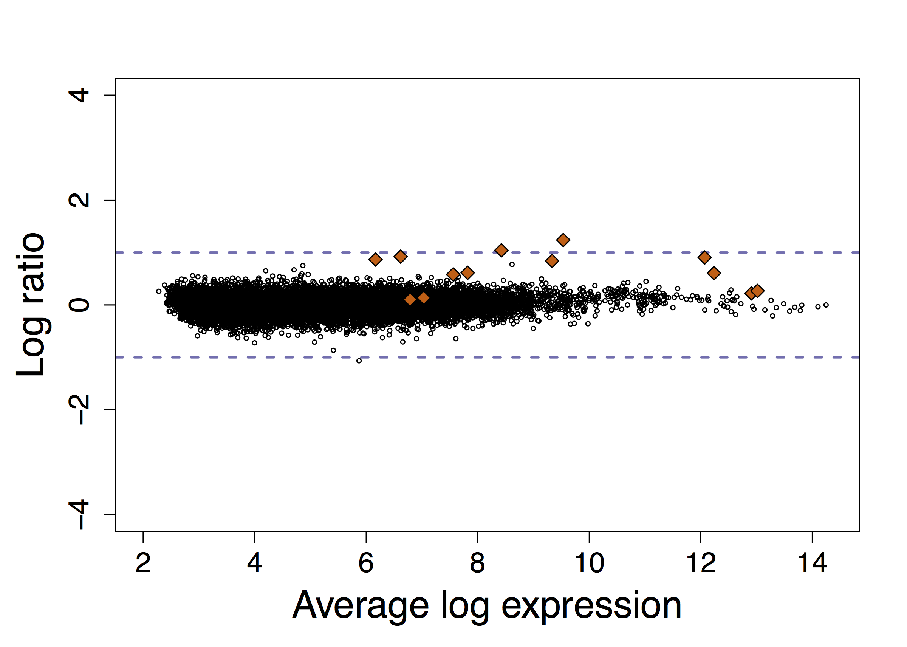
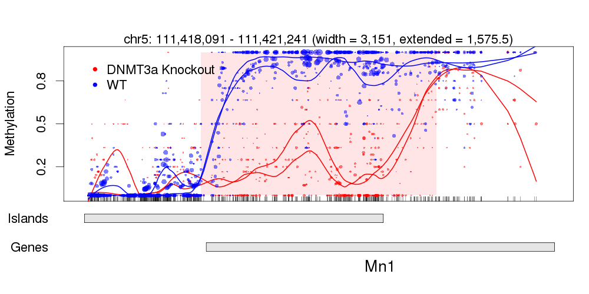

|  |  | The first challenge our lab faced in genomics data analysis was high-variance in measurement in gene expression arrays (left figure). Our RMA algorith (right figure) provided a solution. |

|

|
Today we face similar challenges with RNA-Seq data. We discovered that experimental protocols are sensitive to GC content and produce misleading results if not accounted for. |

|

|
Our labs development of statisitcal tools for detecting differentially methylated regions led to the important discovery in Epigenetics: CpG island shores. |
|  | Today our Epigenetics related research focuses on developing analysis tools for whole genome bisulfite sequencing. |